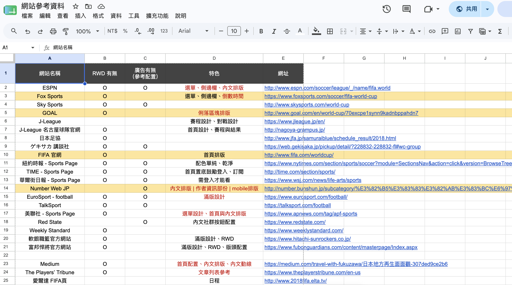
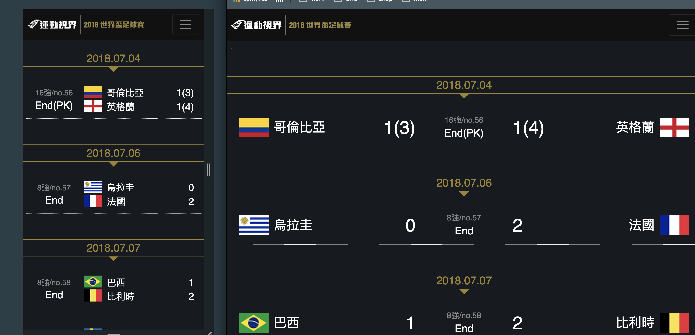
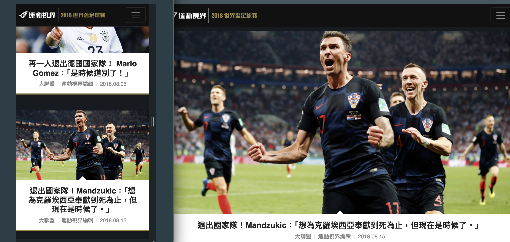
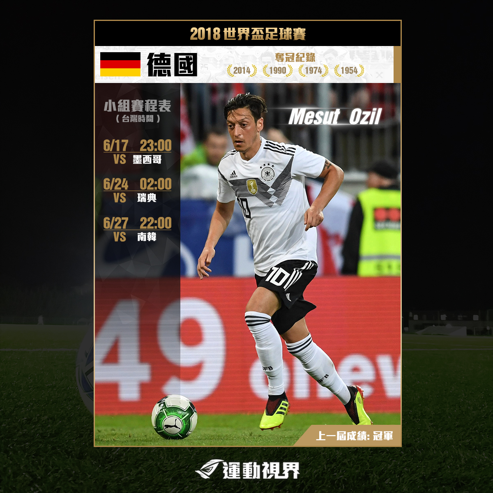
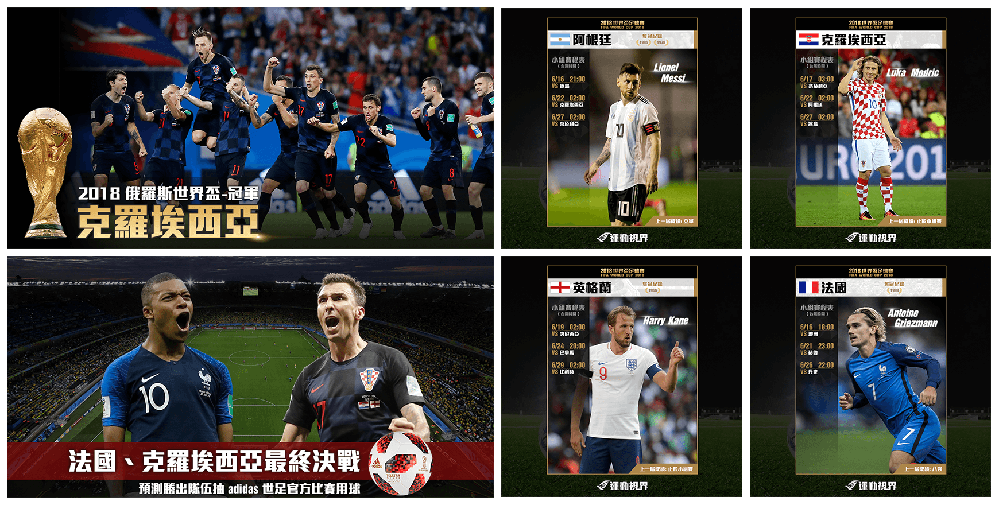

初期規劃、視覺設計、前端切版(HTML/CSS/少部分bootstrap)
由於之前公司沒有做過類似的專案，網站用途為方便讀者找尋Fifa2018各球隊、球員相關介紹文章以及賽程、比分...各項資訊，討論初期，我先找尋了國內外常見的運動類型網站，取各個網站的特色如有無廣告配置、有無RWD作為參考，整理過名單後再與主管、同事一起開會討論可用哪些網站作為參考，實際上切版也會用到裡面的設計元素，視覺設計、前端切版由我來做，資料串接與較為複雜的動態交給全端工程師協助

雖然那時在舊版的運動視界尚屬於AWD型態，只有分手機版、電腦版，但在這專案過後決定以RWD型態來設計，於是各個頁面都會以RWD方式來呈現，並參考當時主流各裝置螢幕寬度來寫類似 @media screen and (max-width: 640px) 的 css 來區分電腦版、筆電、平板、手機寬度作不同呈現


為配合社群部門的行銷需求，我設計並製作了一系列的圖文素材，用於Facebook、Instagram等平台的貼文和廣告投放

